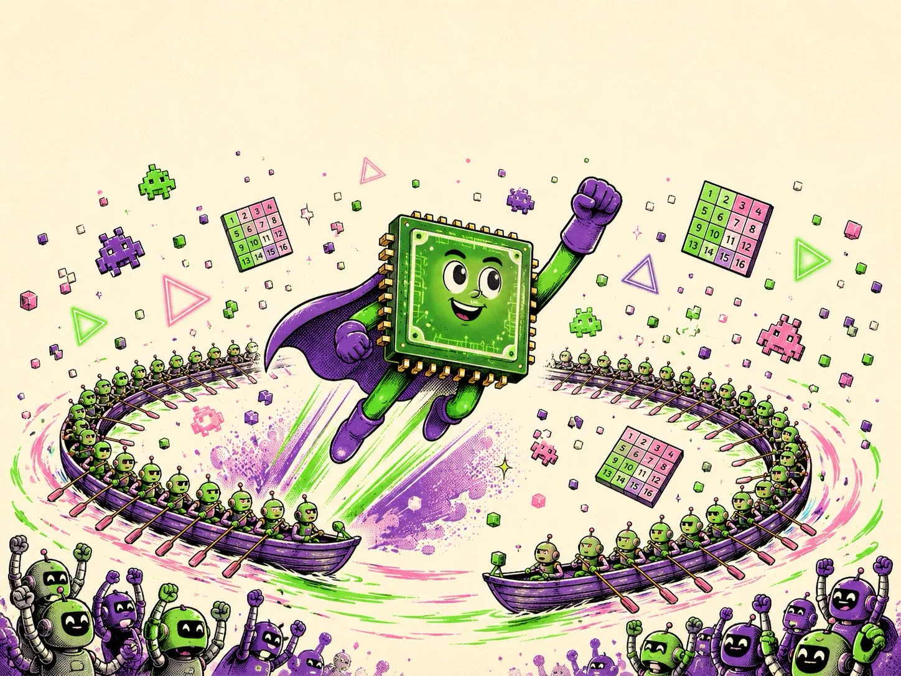

A Zine-Flavored Field Guide
HOW
GPUs
WORK
From game pixels to LLM agents — how a chip built for explosions became the engine of artificial intelligence, explained like a patient senior engineer would over pizza.

A playful zine-style cover illustration, hand-drawn ink with flat colors (electric green, violet, pink on cream paper): a heroic cartoon GPU chip character with a cape flying upward through a swirl of game pixels, glowing triangles, 4×4 number matrices, and tiny cheering robots; a rowing boat of 32 tiny synchronized rowers circles it like a halo. Energetic comic-book composition with halftone dot shading, room at the top and bottom kept clear. No text or lettering in the image. Target size ~1200×900px, 4:3 landscape; composed as cover art with the hero centred and generous safe margins — it is letterboxed into a 4:3 box, so keep nothing important near the edges.
Generate this with your image agent, then drop the file here.
Contents
- Why GPUs Run the Modern World pixels → AI, the one big idea
- CPU vs GPU: Latency vs Throughput four chefs vs 2,000 line cooks
- Inside the Chip: SMs, Warps & SIMT 32 rowers, one heartbeat
- Programming the Beast: Kernels, Blocks & Grids your first CUDA code
- The Memory Mountain why math is free and bytes are not
- The Graphics Pipeline: Triangles to Pixels the day job that started it all
- Tensor Cores & the Precision Game matrix engines, FP8, FP4
- GPUs & LLMs: Feeding the Token Machine why chatbots are bandwidth-bound
- When One GPU Isn't Enough NVLink, clusters, AI factories
- Getting Your Hands on a GPU free GPUs + three starter projects
- The Cheatsheet everything on one spread
Use → and ← to turn pages, ↑ to come back here. Chapters build on each other, but each opens with a refresher — skipping ahead to Chapter 8 (the LLM one) is allowed and encouraged. Dashed boxes are cartoon slots: copy the prompt into your image generator and drop the result right on the box.